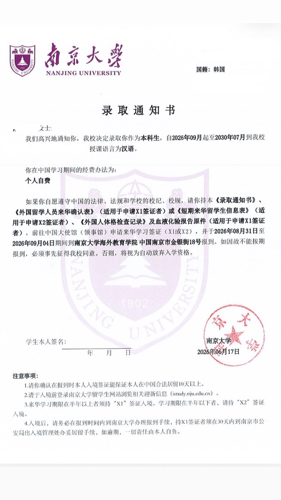

三崎南枝
@misakinae8964
@iing9u 也许我会见到你，我在那里上课，南京大学挺好的，希望你也喜欢，包括南京的气候也很好

잉
@iing9u
제가 이번에 난징대에 합격해서 8월에 난징으로 떠납니다🥹 단건차 때문에 선택한 중국 유학이엇고 목표 대학이었던 난징대에 붙어서 이 계정에선 꼭 한 번 말하구 싶엇습니다
thanks to 건차 🙇🏻🙇🏻 https://t.co/l96aLrdyTZ